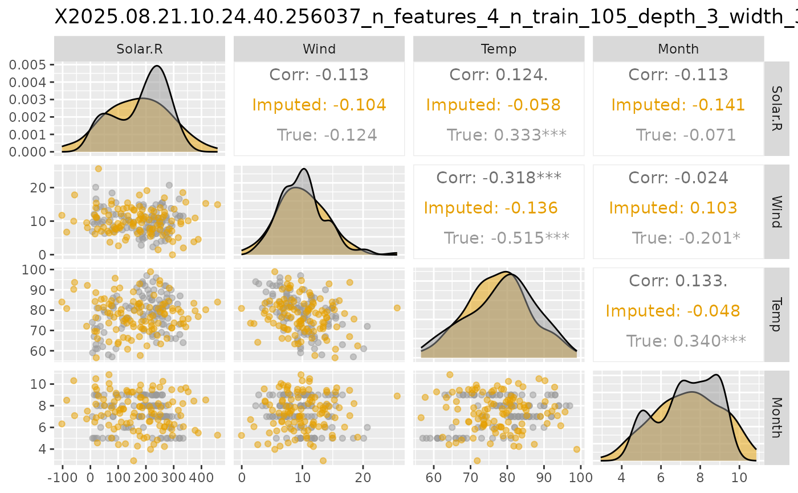

Plot Pairwise Plots for Imputed and True Data
Source:R/approach_vaeac.R
plot_vaeac_imputed_ggpairs.RdA function that creates a matrix of plots (GGally::ggpairs()) from
generated imputations from the unconditioned distribution \(p(\boldsymbol{x})\) estimated by
a vaeac model, and then compares the imputed values with data from the true distribution (if provided).
See ggpairs for an
introduction to GGally::ggpairs(), and the corresponding
vignette.
Usage
plot_vaeac_imputed_ggpairs(
explanation,
which_vaeac_model = "best",
x_true = NULL,
add_title = TRUE,
alpha = 0.5,
upper_cont = c("cor", "points", "smooth", "smooth_loess", "density", "blank"),
upper_cat = c("count", "cross", "ratio", "facetbar", "blank"),
upper_mix = c("box", "box_no_facet", "dot", "dot_no_facet", "facethist",
"facetdensity", "denstrip", "blank"),
lower_cont = c("points", "smooth", "smooth_loess", "density", "cor", "blank"),
lower_cat = c("facetbar", "ratio", "count", "cross", "blank"),
lower_mix = c("facetdensity", "box", "box_no_facet", "dot", "dot_no_facet",
"facethist", "denstrip", "blank"),
diag_cont = c("densityDiag", "barDiag", "blankDiag"),
diag_cat = c("barDiag", "blankDiag"),
cor_method = c("pearson", "kendall", "spearman")
)Arguments
- explanation
Shapr list. The output list from the
explain()function.- which_vaeac_model
String. Indicating which
vaeacmodel to use when generating the samples. Possible options are always'best','best_running', and'last'. All possible options can be obtained by callingnames(explanation$internal$parameters$vaeac$models).- x_true
Data.table containing the data from the distribution that the
vaeacmodel is fitted to.- add_title
Logical. If
TRUE, then a title is added to the plot based on the internal description of thevaeacmodel specified inwhich_vaeac_model.- alpha
Numeric between
0and1(default is0.5). The degree of color transparency.- upper_cont
String. Type of plot to use in upper triangle for continuous features, see
GGally::ggpairs(). Possible options are:'cor'(default),'points','smooth','smooth_loess','density', and'blank'.- upper_cat
String. Type of plot to use in upper triangle for categorical features, see
GGally::ggpairs(). Possible options are:'count'(default),'cross','ratio','facetbar', and'blank'.- upper_mix
String. Type of plot to use in upper triangle for mixed features, see
GGally::ggpairs(). Possible options are:'box'(default),'box_no_facet','dot','dot_no_facet','facethist','facetdensity','denstrip', and'blank'- lower_cont
String. Type of plot to use in lower triangle for continuous features, see
GGally::ggpairs(). Possible options are:'points'(default),'smooth','smooth_loess','density','cor', and'blank'.- lower_cat
String. Type of plot to use in lower triangle for categorical features, see
GGally::ggpairs(). Possible options are:'facetbar'(default),'ratio','count','cross', and'blank'.- lower_mix
String. Type of plot to use in lower triangle for mixed features, see
GGally::ggpairs(). Possible options are:'facetdensity'(default),'box','box_no_facet','dot','dot_no_facet','facethist','denstrip', and'blank'.- diag_cont
String. Type of plot to use on the diagonal for continuous features, see
GGally::ggpairs(). Possible options are:'densityDiag'(default),'barDiag', and'blankDiag'.- diag_cat
String. Type of plot to use on the diagonal for categorical features, see
GGally::ggpairs(). Possible options are:'barDiag'(default) and'blankDiag'.- cor_method
String. Type of correlation measure, see
GGally::ggpairs(). Possible options are:'pearson'(default),'kendall', and'spearman'.
Value
A GGally::ggpairs() figure.
Examples
# \donttest{
if (requireNamespace("xgboost", quietly = TRUE) &&
requireNamespace("ggplot2", quietly = TRUE) &&
requireNamespace("torch", quietly = TRUE) &&
torch::torch_is_installed()) {
data("airquality")
data <- data.table::as.data.table(airquality)
data <- data[complete.cases(data), ]
x_var <- c("Solar.R", "Wind", "Temp", "Month")
y_var <- "Ozone"
ind_x_explain <- 1:6
x_train <- data[-ind_x_explain, ..x_var]
y_train <- data[-ind_x_explain, get(y_var)]
x_explain <- data[ind_x_explain, ..x_var]
# Fitting a basic xgboost model to the training data
model <- xgboost::xgboost(
data = as.matrix(x_train),
label = y_train,
nround = 100,
verbose = FALSE
)
explanation <- shapr::explain(
model = model,
x_explain = x_explain,
x_train = x_train,
approach = "vaeac",
phi0 = mean(y_train),
n_MC_samples = 1,
vaeac.epochs = 10,
vaeac.n_vaeacs_initialize = 1
)
# Plot the results
figure <- shapr::plot_vaeac_imputed_ggpairs(
explanation = explanation,
which_vaeac_model = "best",
x_true = x_train,
add_title = TRUE
)
figure
# Note that this is an ggplot2 object which we can alter, e.g., we can change the colors.
figure +
ggplot2::scale_color_manual(values = c("#E69F00", "#999999")) +
ggplot2::scale_fill_manual(values = c("#E69F00", "#999999"))
}
#>
#> ── Starting `shapr::explain()` at 2025-11-17 18:45:54 ──────────────────────────
#> ℹ Feature classes extracted from the model contain `NA`.
#> Assuming feature classes from the data are correct.
#> ℹ `max_n_coalitions` is `NULL` or larger than `2^n_features = 16`, and is
#> therefore set to `2^n_features = 16`.
#>
#> ── Explanation overview ──
#>
#> • Model class: <xgb.Booster>
#> • v(S) estimation class: Monte Carlo integration
#> • Approach: vaeac
#> • Procedure: Non-iterative
#> • Number of Monte Carlo integration samples: 1
#> • Number of feature-wise Shapley values: 4
#> • Number of observations to explain: 6
#> • Computations (temporary) saved at: /tmp/RtmpPyrEpN/shapr_obj_23d978f379ce.rds
#>
#> ── Main computation started ──
#>
#> ℹ Using 16 of 16 coalitions.

# }